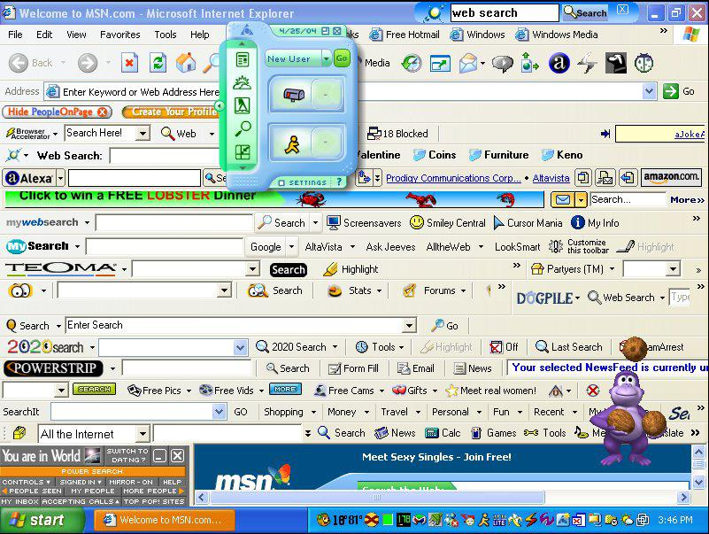

library(ellmer)
my_chat <- chat_openai()
my_chatIntegrating Large Language Model tools to our R workflows
Physalia - Wales Ecology and Evolution Network
Hands-on
Contex-Aware Help
- Ask the chatbot in the
browserIDE CopyApply the responseand paste itin RShare the errors or output with the chatRepeat (and potentially introduce errors)
ellmer and friends

Bridging R and LLMs
Robust and designed specifically for easy interaction with LLMs directly from R
Broad provider support and meant for entreprise/production use
Allows models to extend their capabilities by executing R code
ellmer and friends
Bridging R and LLMs
Can produce output that is immediately usable in R
Integrations to ‘see’ the R session
Strong dev team
gander

- More than a simple chat window
- Powered by
ellmer - RStudio & Positron
gander receives a snapshot of our environment with every request and recognizes what we are talking about, including object and variable names
gander demo
We use ellmer to specify which model powers the addin (and optionally set a system prompt).
Today we can use openAI or Anthropic models.
- use with
ctr+alt+G
ganderDemo.R
Setup instructions for Positron here
ellmer demo
Chat with the model then look at your chat object again
Create a new chat object with a different model and system prompt
Interacting with the chat object
Without leaving R:
In the R console
live_console(my_chat)
In our web browser
live_browser(my_chat)
Extension-based tools
Positron (vsCode) extensions
Install from the OpenVSX marketplace from the Extensions pane
Continue continue.dev
“Ship faster with Continuous AI”
Cool IDE features:
- Chat
- Autocomplete
- Context Items
- Agent mode
- Planning mode
Windsurf windsurf.com
- formerly Codeium
the most intuitive AI coding experience, built to keep you—and your team—in flow
Cool IDE features:
Chat
Autocomplete
Context Items
Base model included with free tier is Meta’s Llama 3.1 70B.
Roo Code roocode.com
The AI dev team that gets things done
Cool IDE features:
- Chat
- Context Items
- Multiple customizable ‘personas’ (agent, debugger, coder, code architect, etc)
- Shows model details
Positron Assistant
- Comes with recent versions of Positron
- Highly integrated
- Meant for R and Python
- Limited models supported at present
- 👀
